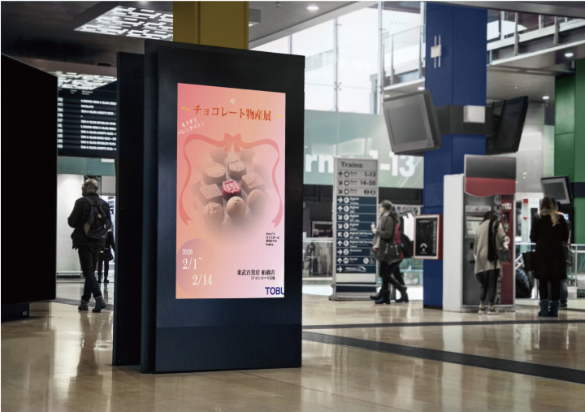
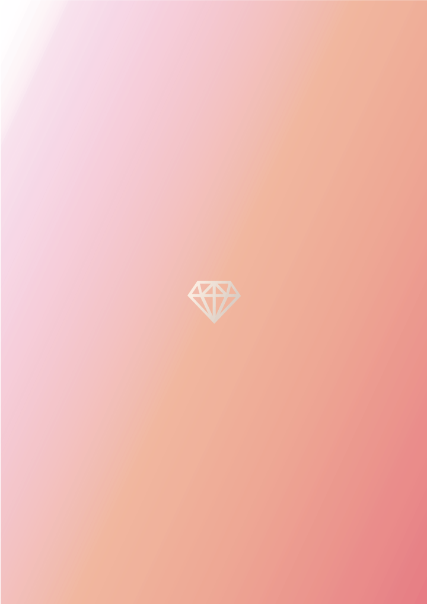
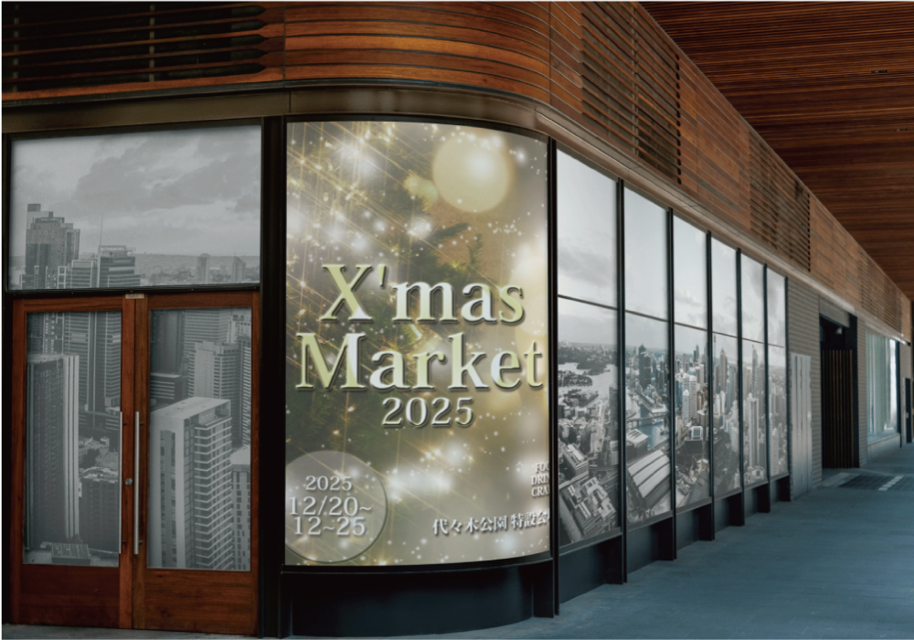

Design Focus
第1の目的として、通行人の人達にバレンタインが近づいていることをアピールし、贈り物を考えるきっかけ作りをしています。
第2に直接的なチョコレートのイメージを広告に配置することで、贈り物選びに誘導を掛けています。
第3に繰り返し視認されることで、徐々に購買意欲を促すことを目的としています。
中・長期的にじわりじわりと広告効果を高める設計を意識しています。
Mock-Up

Final artwork

Design Focus
デザイン全体に煌びやかな印象を持たせました。
クリスマスを特別な日にしてくれるイベントとして、来場者に期待感を持って来て欲しいと思い制作しています。
キラキラと輝く模様は、大きさの違うブラシでレイヤーを分け透明度を変化させることで深みが出しています。
Mock-Up
